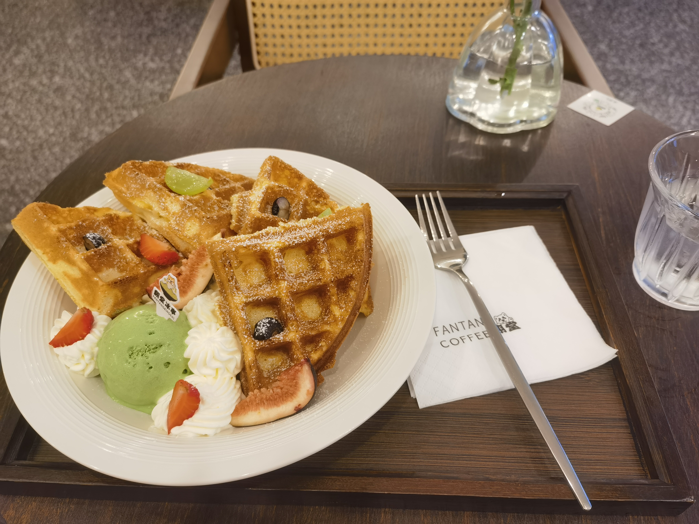
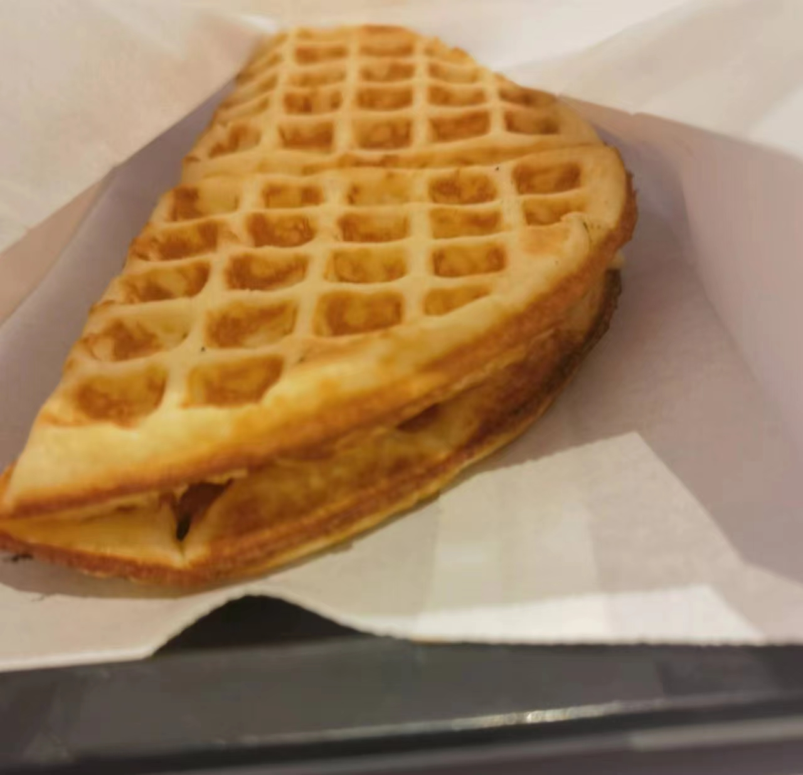

Waffles & Milk Tea
It’s really unfortunate that there rarely have coffee & dessert shops around the Jiang’an campus.
Recently, I came across a nice little shop, but not to my surprise, it takes an hour by bus to get there from school. Well, all right, even though the location is also in Shuangliu District, it’s still miles away.
I ordered a pudding and waffle combo——Okay, no pudding——the pudding is replaced by ice cream. Beyond my expectations, the waffle, along with fruits and cream, is very delicious. The hot waffle combines harmoniously with the cold ice cream, and the waffle itself is crispy on the outside and soft on the inside.

It reminded me of the delicious waffles sold at National University of Singapore canteen for breakfast. The cheese waffle is a perfect match with the milk tea also sold there. Although it’s 2.2 SGD(≈12 RMB) and is a little expensive compared to the 0.9 SGD(≈5 RMB) meat bun, I ate it for many days continuously.

On my way back to the bus stop, I came across a milk tea shop. I noticed it because it has a giant slogan tells “ Milk Tea Brand From Singapore”, but I never saw it during my one-month stay in Singapore😂. Curiously, I check the menu, and I found no there isn’t much difference between the domestic brands and it.
However, I found a interesting kind of milk tea which is 18 RMB for cold while 22 RMB for hot. I really like it as in China, no matter what temperature you choose, the price is the same in the most time. My favorite temperature is “No Ice”, as I dislike too much ice and the drink is still cold. But in Singapore, cold and hot drinks are sold separately with different price in many places. And you couldn’t select the amount of ice——then you get a whole cup of ice.